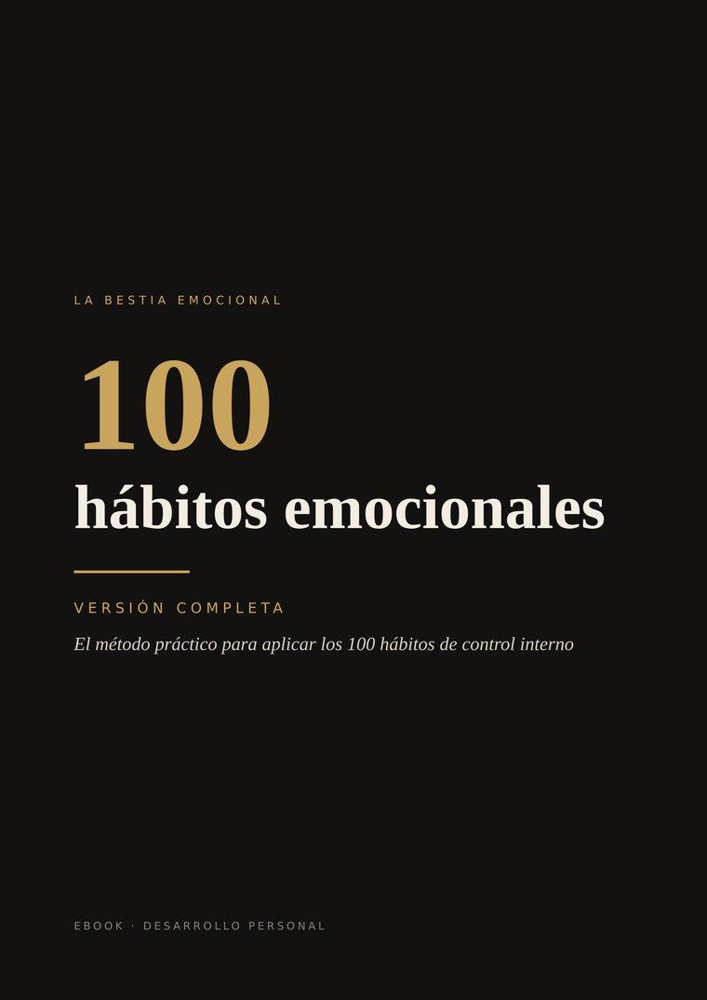
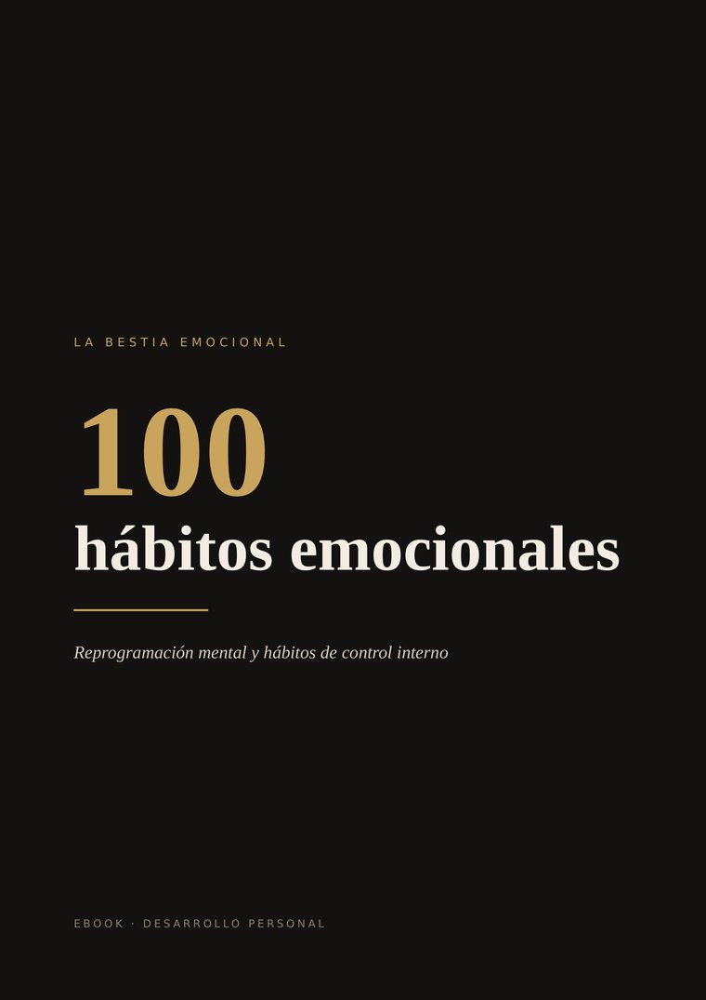

Deja de reaccionar.
Empieza a dominarte.
100 hábitos de control interno para el hombre que se cansó de que sus emociones decidan por él.

- Explotas y después te arrepientes.
- Persigues a quien se aleja.
- Dices que sí cuando quieres decir que no.
- Vuelves a lo que ya sabes que te hace daño.
- Sabes lo que deberías hacer… y aun así no lo haces.
No es falta de carácter. Es falta de método.
100 hábitos para recuperar el mando de tu vida interior
Dominar tus impulsos, poner límites, soltar a tiempo y dejar de vivir a merced de cada golpe. Eso es La bestia emocional.
Dominio no es reprimir lo que sientes. Es elegir qué haces con ello.

Empieza gratis
Los 100 hábitos de la bestia emocional en un PDF de 50 páginas. Descubre qué hace un hombre con dominio de sí mismo y por qué importa.
Descargar PDF gratisSin registro. Descarga directa.
La gratuita te dice qué.
La completa te enseña cómo.
Qué incluye
- Los 100 hábitos, con el mismo número, explicados con claridad y sin relleno.
- Pasos concretos para aplicar cada uno.
- Ejemplos reales: pareja, familia, trabajo y amigos.
- Ejercicios prácticos y frases listas para usar.
- Tres niveles de dificultad: Base, Dominio y Bestia.
- Dos índices: en orden y por temas.
- 166 páginas en PDF.
Los 8 bloques
Dominar el impulso
Qué hacer cuando la emoción te empuja a actuar ya.
Conocer tus patrones
Tu historia, tus heridas y la programación que repites.
Emociones intensas
Rabia, vacío y deseo: sentirlos sin que te gobiernen.
Disciplina mental y física
Las rutinas que sostienen tu control interno.
Límites y protección de tu energía
Quién entra, cuánto recibe y cuándo te retiras.
Apego y necesidad
Dejar de mendigar presencia, afecto y validación.
Saber soltar
Cortar a tiempo y no volver a lo que te rompió.
Identidad, carácter y rumbo
Quién eres cuando ya nadie te define.
Una muestra real del libro
Nunca reaccionar en caliente
Cuando una emoción fuerte te golpea, algo dentro de ti exige actuar ya: contestar, demostrar, no quedarte callado. Este hábito pide una sola cosa: mientras estés encendido, no tomes decisiones ni digas nada importante. La emoción la sientes completa. La respuesta llega después.
Conoce tu señal. Cada hombre tiene la suya: la mandíbula apretada, calor en la cara, el pulgar que ya está escribiendo, las frases que empiezan con "siempre" o "nunca". Cuando la detectas, ya llevas la mitad del camino.
"LO URGENTE ES LA EMOCIÓN, NO LA RESPUESTA."
Gratuita o completa
| Gratuita | Completa | |
|---|---|---|
| Los 100 hábitos | ✔ | ✔ |
| Qué hace y por qué importa | ✔ | ✔ |
| Pasos concretos para aplicar cada hábito | — | ✔ |
| Ejemplos de situaciones reales | — | ✔ |
| Ejercicios y frases listas para usar | — | ✔ |
| Niveles de dificultad | — | ✔ |
| Índice por temas | — | ✔ |
| Páginas | 50 | 166 |
- Quieres dejar de reaccionar en caliente.
- Estás saliendo de una relación que te desgastó.
- Sientes que vives para agradar a los demás.
- Quieres un método práctico, no solo motivación.
- Buscas frases para leer y olvidar.
- Quieres aprender a manipular a otros.
Antes de empezar
¿En qué formato viene?
En PDF, para leer en el móvil, la tableta o el ordenador.
¿Cómo recibo la versión completa?
Al comprar, Hotmart te envía el acceso a tu correo.
¿Necesito haber leído la versión gratuita?
No, aunque es un buen punto de partida.
¿Tiene garantía?
Sí. La compra a través de Hotmart incluye un periodo de garantía de [DÍAS DE GARANTÍA] días.
¿Sustituye a un psicólogo?
No. Es una herramienta de crecimiento personal. Si estás pasando por algo grave, busca ayuda profesional.
No necesitas ser otro hombre para empezar.
Necesitas empezar para convertirte en él.